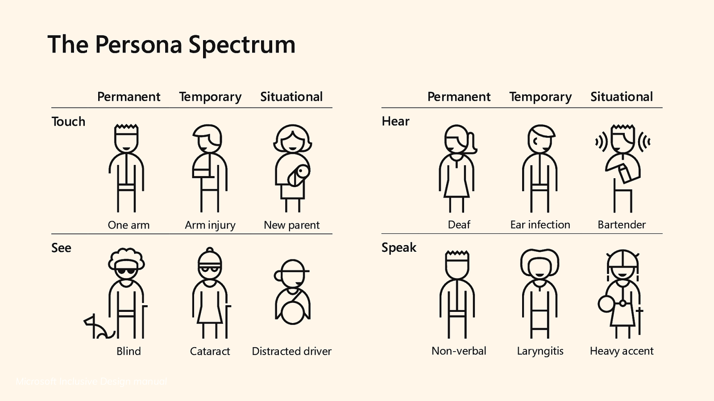
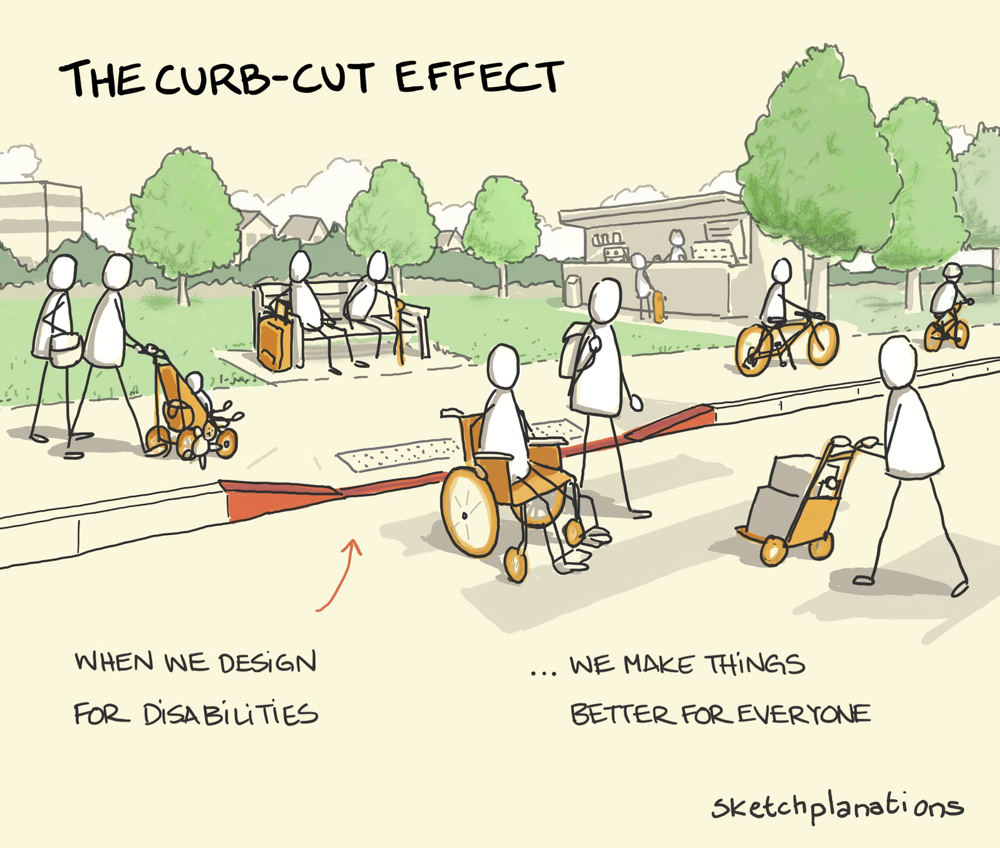

Accessibility
An introduction to a11y
About me
- UX Engineer
- Coded bits of Xero, ANZ, TNZ
- Focus on accessibility &
design systems - Kyudoka
What is
web accessibility?
Inclusion and access to
information
and services
Who is web accessibility for?
❤️ Everyone
Types of disabilities
The curb cut effect
What could access needs look like?
Lets hit some examples!
Accessible sites
Examples of different types in the wild
How to design
an accessible experience?
Start with content, not visuals
Linear text experience
❤️ by keyboard only users,
screen readers,
people with different cognitive abilities
Multiple ways to convey information
Text, video, audio, non-coloured visual treatments
Overwhelmed?
Start with higher contrast and larger font
Where can coders start?

Where can coders start?
<img
src="donuts133.png"
alt="Bitten off delicious looking ring donuts,
sprinkled with hundred and thousands
held up in-front of Sixes and Sevens sign"
/>
Accessibility is a right
to equal access of your information and services